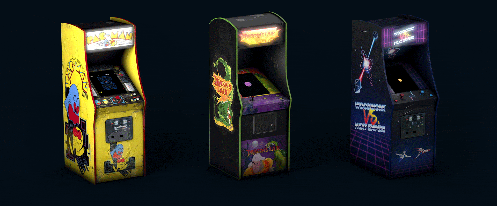
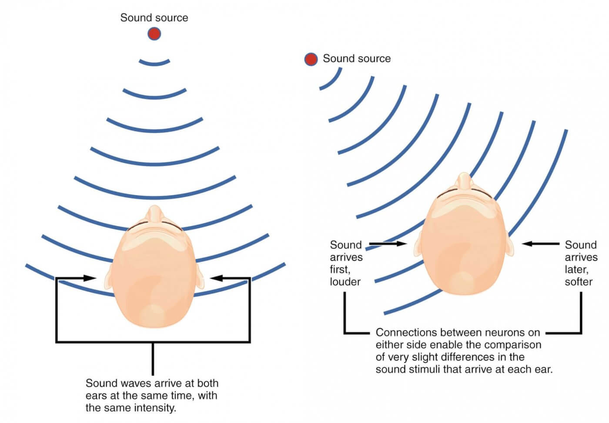
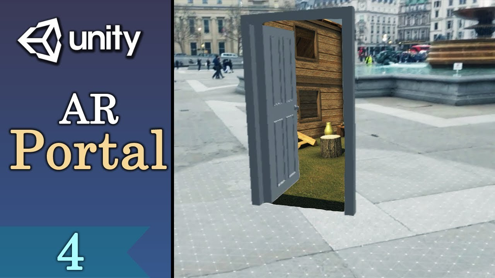

ARcade by Next Empire
I found all guest lectures to be very informative and inspiring, however the one that I enjoyed the most was Next Empire founder’s talk, which focused on the creation of diverse and innovative experiences, products and experiments.
I chose to dig deeper into one of Next Empire's projects that surprised me the most. It’s called The ARcade and it’s an app that recreates the setting from Stranger Things into the real world by using Augmented Reality technologies. The goal of this project is to allow fans of the notorious Netflix series to walk into another world and experience its content by opening an interdimensional portal.
The experience starts by showing a few arcade cabinets in the real world (Pac Man, Dragon’s Lair, and a customized one from the creators) facing a spooky door/portal, still located in the real world. Once the user walks through the portal, the experience gains some VR elements as the user is completely immersed into the parallel world, a very dark and spooky environment characterized by blue filtered lights and sinister noises. In the background, a huge monster growls loudly while the series soundtrack reminds the player that he’s now part of Stranger Things underworld: The Upside Down.
Here is the website of this experience: ARcade
and the official page in Next Empire's portfolio: Next Empire
and finally a Behance page for the ARcade: Behance

The software used to create this experience was ARkit, Apple’s AR tool, while the sounds and music was taken care by a creative audio studio, Antfood, who created 3D sound (binaural audio) with Eurorack modular synthesizers to make the whole experience more immersive.
I think this experiment does contain elements that are trademarks in the Human Computer Interaction field, thank to the fusion of AR/VR technologies, 3D sound system, playful elements and artsy components as well while representing an innovative experience, a connection between real world and invented world made possible by the presence of a portal. Speaking of this, I think the portal is what makes this project fresh and captivating, as it provides its users with a choice making element, a trigger that when activated it gives us the chance to move forward into something magic.
It’s impressive to see how technological skills can be implemented in such an artistic and cinematographic way, taking inspiration from series and creating a sort of bond with a popular series.

Personally, I find this experience mind opening, as it provides me with plenty of ideas for future projects, where I want to be able to connect my imaginary world with the one I was thrown into when I was born. Creating an immersive experience where a portal leads you to an imaginary world that feels tangible is a great opportunity for everyone to create their getaway, outside of the real world’s rules.
The binaural sound in this project affects the way the sounds are perceived, depending on its source direction.
There are other experience where a door was used to connect the tangible world with the augmented one:
